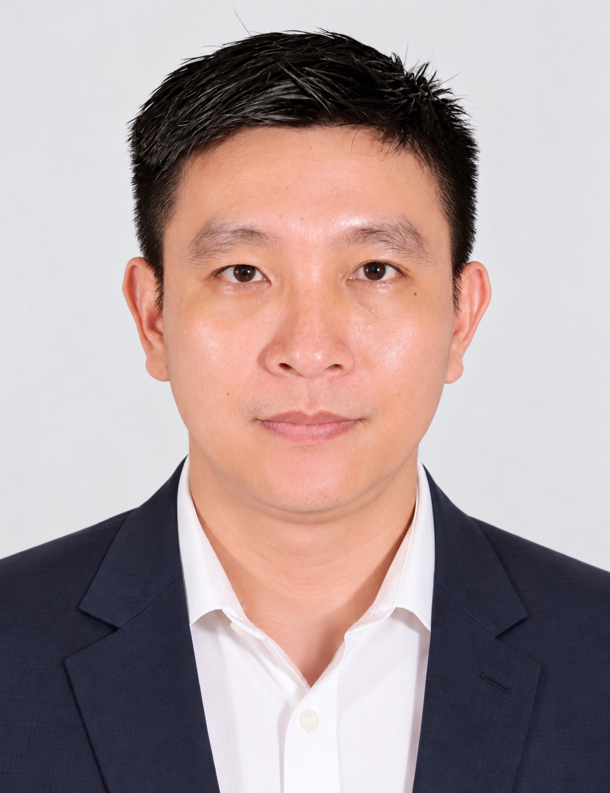

Odoo
Sales, Purchase, Inventory, Manufacturing, Accounting, CRM, Project Management and Reporting.
ERP consultant with 5+ years of functional consulting experience, hands-on project delivery leadership, and a deep accounting background. I translate complex operations into practical, scalable Odoo and Oracle NetSuite solutions.

I work at the intersection of finance, operations and enterprise systems.
My experience covers requirement gathering, business-process analysis, ERP configuration, solution design, testing, data migration, UAT, training and post-go-live support. I focus on turning business requirements into solutions that users can actually operate.
My accounting foundation helps me understand not only how an ERP should be configured, but why the underlying controls, reporting and transaction flows matter.
Sales, Purchase, Inventory, Manufacturing, Accounting, CRM, Project Management and Reporting.
Financial processes, configuration, customization requirements, data migration, testing and end-user adoption.
GL, AR, AP, inventory, fixed assets, CAPEX, financial reporting, tax and audit support.
Order-to-Cash, Procure-to-Pay, inventory, manufacturing, project billing and financial reporting workflows.
Requirements, functional design, user stories, acceptance criteria, test cases, UAT, training and go-live support.
Data mapping, cleansing, migration testing, reconciliation, documentation and user enablement.
Lead Odoo implementation and enhancement projects from requirements through go-live and post-production support. Act as a key point of contact between clients and delivery teams, translating business needs into functional solutions while coordinating consultants, developers and QA. Manage delivery priorities, scope, timeline, dependencies, risks, UAT, migration, training and stakeholder communication across accounting, sales, purchasing, inventory, manufacturing, projects, CRM and reporting.
Implemented Oracle NetSuite for customers in Vietnam and Thailand. Gathered business requirements, configured and tested solutions, supported financial-data migration, and delivered end-user training and ongoing assistance.
Led accounting activities across GL, CAPEX, fixed assets, AR, AP, inventory and financial reporting while also acting as ERP System Admin and Analyst for configuration, documentation and user support.
Managed GL activities, balance-sheet and P&L analysis, AR/AP/inventory reviews, CAPEX reconciliation, working-capital reporting, tax declarations and audit support using Accpac and SAP.
Handled project-related GL entries, bank reconciliation, billing, AR aging, internal reporting, commission recognition and monthly estimates in SAP.
Worked across sales, inventory, receivables and general accounting using Microsoft Dynamics AX, including inventory control, invoicing, revenue/VAT recording, aging and daily accounting controls.
Accounting · GPA 3.34
Oracle NetSuite
Odoo · Version 19
BUSINESS × FINANCE × TECHNOLOGY